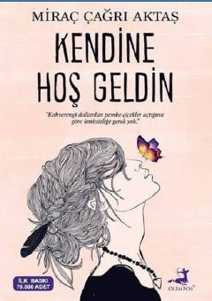

KHO'zingizni sevish va o'zingizga qaytish yo'lidagi ilhomlantiruvchi qo'llanma.
Ushbu kitob insonning o'zini kashf etishi, o'ziga mehr berishi va ichki xotirjamlikni topishi uchun yo'l-yo'riq ko'rsatadi. Muallif o'quvchiga o'zining eng muhim inson ekanligini va o'ziga xush kelibsiz deyish vaqti kelganini eslatadi.